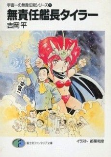

The Irresponsible Captain Tylor
無責任艦長タイラー
The anime takes the story to Unclear.
7.5AniList score
—Animeter, no votes yet
26episodes
Watch order
In airing order. Episode numbers on this site count straight through every season, so season 2 starts at episode —.
1
1993 · TV
The Irresponsible Captain Tylor
Episodes1–2626 ep
Films, OVAs and specials
Not counted in the episode numbers above.
·
1994 · OVA
Irresponsible Captain Tylor OVA
Sources: AniList